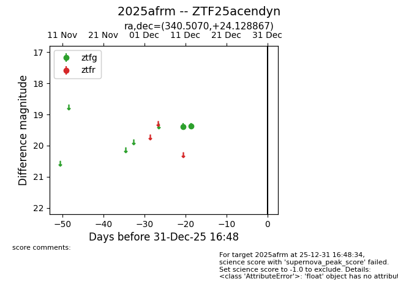
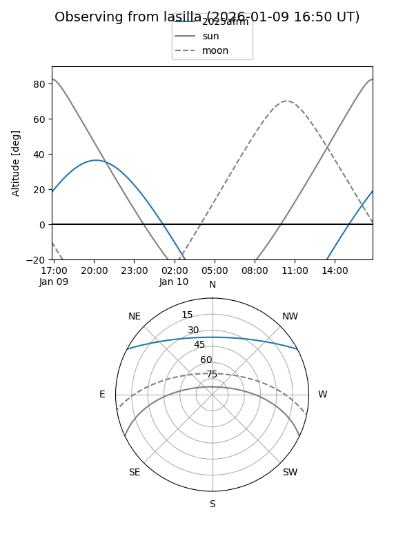
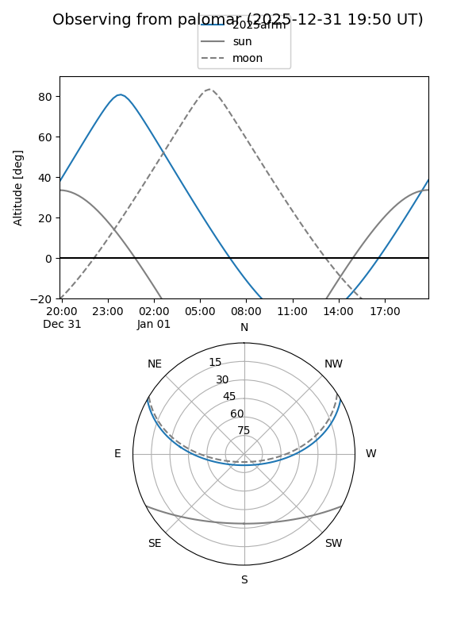

2025afrm
Target 2025afrm at 2025-12-31 18:00
Aliases and brokers:
FINK: link
Lasair: link
ALeRCE: link
TNS: link
YSE: link
alt names
ZTF25acendyn (ztf,fink_ztf)
2025afrm (tns,yse)
Coordinates:
equatorial (ra, dec) = 340.5070,+24.12887
equatorial (HMS+DMS) = 22:42:01.67,+24:07:43.92
galactic (l, b) = (88.6110,-29.98317)
Flags:
Photometry:
last ztfg=19.37
2 ztfg detections
Lightcurve

Visibility


Additional plots